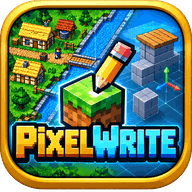

Pixelwright Support
Getting started
Tap ? in the top bar for the built-in guide. It walks through building, painting, shaping land, making items, creatures, people, conversations, quests, rules and Things, and how to play.
Saving and backups
Everything saves on your device automatically. To keep a copy, go to Create → Game → World → Back up world. Load it again with Load world file. Deleting the app deletes your saved worlds, so back up first.
Playing together
- The host opens Play → Map → Host this world and shares the 6-letter code.
- Friends tap Join a world and type the code.
- The world stays open only while the host's app is open.
- Some mobile or school networks block player-to-player connections. If joining fails, try Wi-Fi on both devices.
Safety
Chat is filtered by default. Tap any player (or use the player list) to Mute or Report them. Hosts can Remove players. Hateful, sexual, threatening or bullying messages and names are not allowed, and players who break these rules can be blocked from the game.
Privacy
Pixelwright has no accounts, ads or tracking. Read the privacy policy.
© 2026 Jacob Cooper